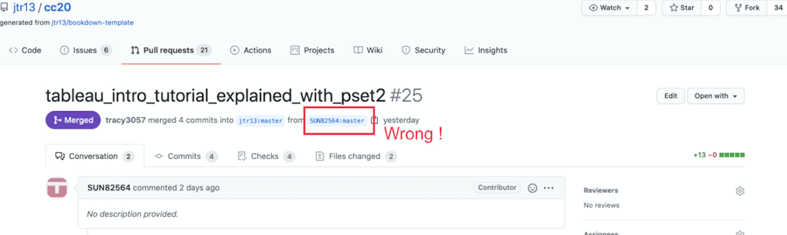
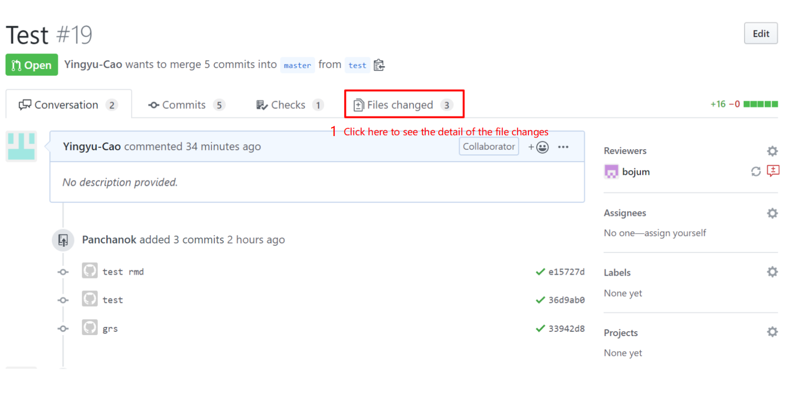

23 Tutorial for pull request mergers
23.1 General
The following is a checklist of steps to perform before merging the pull request. At any point, if you’re not sure what to do, request a review from one of the PR leaders.
23.2 Check branch
PR should be submitted from a non-main branch.

If PR was submitted from the main branch, provide these instructions on how to fix the problem:
Close this PR.
Follow the instructions here for forgetting to branch if you committed and pushed to GitHub: https://edav.info/github#fixing-mistakes
If you have trouble with 2., then delete the local folder of the project, delete your fork on GitHub, and start over.
Open a new PR.

23.3 Examine files that were added or modified

There should be only ONE
.Rmdfile.All of the additional resources should be in the
resources/<project_name>/folder.There should be no other files in the root directory besides the
.Rmdfile.
23.4 Check .Rmd filename
- The
.Rmdfilename should be words only and joined with underscores, no white space. (Update: It does not need to be the same as the branch name.) - The
.Rmdfilename can only contain lowercase letters. (Otherwise the filenames do not sort nicely on the repo home page.)
23.5 Check .Rmd file contents
- The file should not contain a YAML header nor a
---line. - The second line should be blank, followed by the author name(s).
- The first line should start with a single hashtag
#, followed by a single whitespace, and then the title. - There should be no additional single hashtag headers in the chapter. (If there are, new chapters will be created.)
- Other hashtag headers should not be followed by numbers since the hashtags will create numbered subheadings. Correct:
## Subheading. Incorrect:## 3. Subheading. - If the file contains a setup chunk in
.Rmdfile, it should not contain asetuplabel. (The bookdown render will fail if there are duplicate chunk labels.)
i.e. use{r, include=FALSE}instead of{r setup, include=FALSE}.
See sample.Rmd - Links to internal files must contain
resources/<project_name>/in the path, such as: - The file should not contain any
install.packages(),writefunctions,setwd(), orgetwd(). - If there’s anything else that looks odd but you’re not sure, assign
jtr13to review and explain the issue.
23.6 Request changes
If there are problems with any of the checks listed above, explain why the pull request cannot be merged and request changes by following these steps:



Then, add a changes requested label to this pull request.
Your job for this pull request is done for now. Once contributors fix their requests, review again and either move forward with the merge or explain what changes still need to be made.
23.7 Steps to Merge the PR
Go to the main branch of our project (jtr13/cc21fall1) and open the
_bookdown.ymlfileCopy the entire rmd_files section. It would look something like this
rmd_files: [ 'index.Rmd', # must be first chapter 'assignment.Rmd', ...., ...., ]
-
Open the branch of the submitted PR by following these steps:
- To access the PR branch:

- Make sure you are on the PR branch by checking that the PR branch name is shown (not
main):

Remove their rmd_files: [] section and paste the one which we copied from the main branch of our project.
Add the name of the new file in single quotes followed by a comma under the labelled section (eg. Cheatsheets, Tutorials etc).
Save the edited version.
Come back to the PR.
Merge the PR.
Click on the Actions tabs and check whether the build has been successful (A successful build will have a green dot in front of the actions). PLEASE NOTE that the actions take a while to complete (approximately 5-6 mins depending on the number of files to be rendered), so you might need to wait for some time to finally check whether the build was successful or not.
In case the build fail and you are not able to understand or rectify it please tag one of the PR Assigners so that they can review it. PLEASE DO NOT
revert mergeas it would create new branches in the workflow.

23.8 Merge PR and leave a comment
Now comes the final step.
If you’re not sure that you did things correctly, assign one of the PR merge leaders or @jtr13 to review before you merge the PR.
Go back to the conversation tab of the pull requests page, for example:
https://github.com/jtr13/cc20/pull/23#issuecomment-728506101
Leave comments for congratulations 🎉 (type :tada:) and then click on the green button for merge.
23.9 Check updated version
A successful merge means that the addition file or files were added to the project with no merge conflicts. It does not mean that the book will render and deploy to GitHub pages without issues. After the merge, it will take about 5-10 minutes for GitHub Actions to render the book and deploy the updated version. Please check that the Action ran successfully and if it didn’t, open up an issue with a link to the failed run.